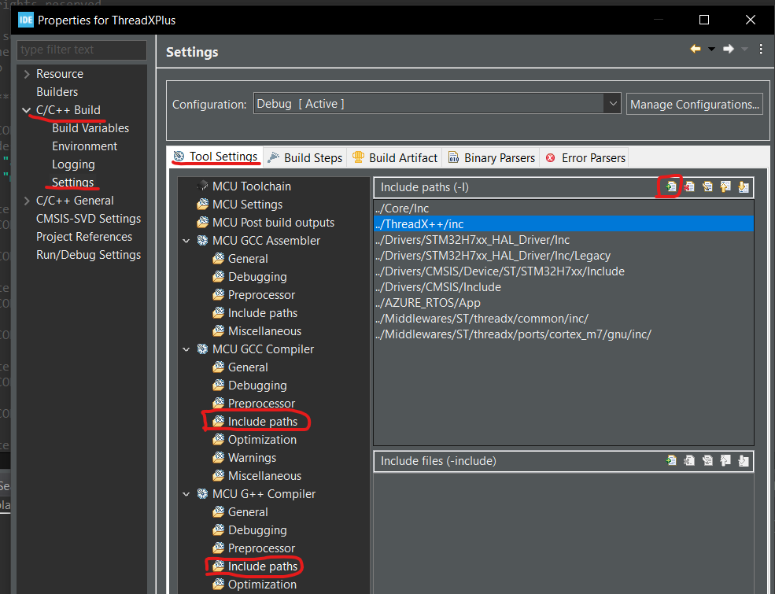
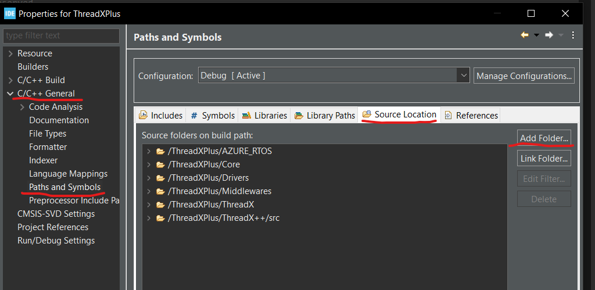
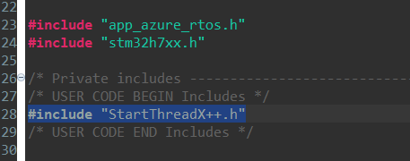
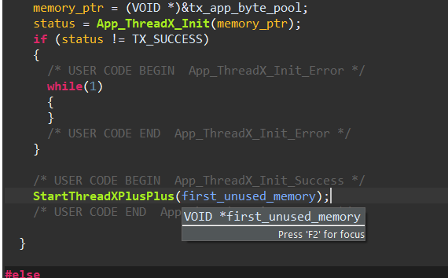

Add ThreadX++
Introduction
In this tutorial we add the ThreadX++ to project
Add ThreadX++
- Clone the ThreadX++ Link
- Copy the folder "ThreadX++" to your project.
- Now we need to add ThreadX++ to include path and source path (this step is explain in CUBE IDE, if you work on other IDE you need to figure this step yourself... good luck), In CUBE IDE go to "Project->Properties", new window will open, in the left side of the window go to "C/C++ Build->Settings", select tab "Tool Settings", go to "MCU G++ Compiler->Include paths", in the window you will see list of the included path, Add the path to ThreadX++/inc folder, you also need to do the same in "MCU G++ Compiler->Include paths".  Now return to left side of the window and select "C/C++ General->Paths and Symbols" than select tab "Source Location" and add the folder ThreadX++/src 
- In this step we call the function that add the ThreadX++ to system, Go to file "AZURE_RTOS/Ap/app_azure_rtos.c" and add the include "#include <StartThreadX++.h>"  than add the call of the function StartThreadXPlusPlus(first_unused_memory); after the call of function App_ThreadX_Init 